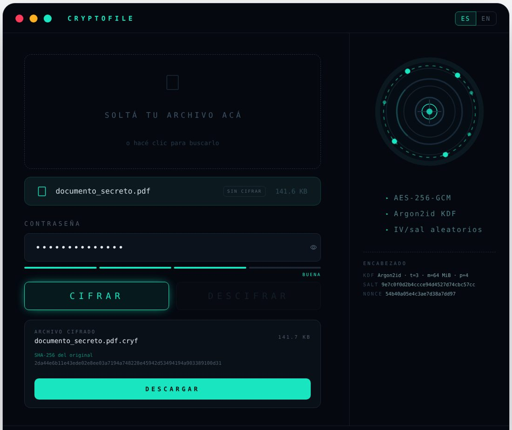
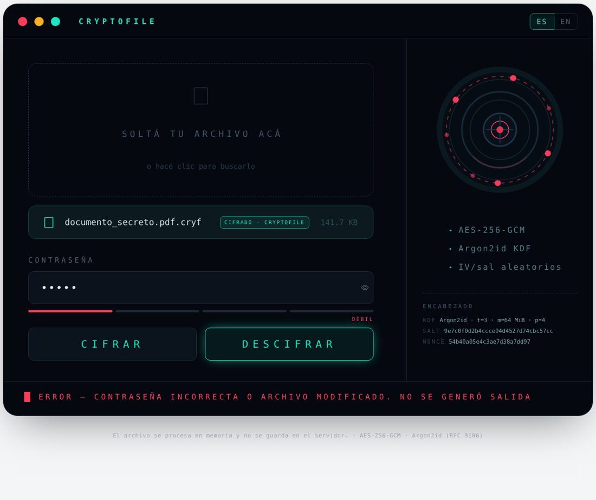

CryptoFile cifra cualquier archivo con AES-256-GCM. La clave se deriva de una contraseña con
Argon2id y una sal aleatoria, y el resultado se descifra a un archivo idéntico byte a byte. Se usa
desde la línea de comandos (cli.py) o desde una interfaz web hecha con Streamlit (app.py).
Las dos usan el mismo núcleo criptográfico (cryptofile/core.py), que se apoya en la librería
cryptography de Python. No se implementa AES desde cero.
| Archivo | Responsabilidad |
|---|---|
| cryptofile/core.py | Formato del archivo cifrado, derivación de clave, encrypt() y decrypt(), errores (AuthenticationError, InvalidFormatError). |
| cli.py | Comandos encrypt, decrypt y sha256. Pide la contraseña sin mostrarla y nunca sobrescribe archivos sin --force. |
| app.py, i18n.py | Interfaz web (Streamlit) en español e inglés. Procesa todo en memoria y ofrece el resultado como descarga. |
| tests/ | 25 pruebas automáticas con pytest: ida y vuelta, contraseña incorrecta, archivo alterado, sal/IV distintos y formato. |
os.urandom (CSPRNG del sistema operativo) una sal de 16 bytes y un nonce de 12 bytes.Argon2id(contraseña, sal, t=3, m=64 MiB, p=4).nombre original + contenido con AES-256-GCM. El encabezado se pasa como dato asociado (AAD).encabezado ‖ texto cifrado ‖ tag (16 bytes).Elegimos GCM y no CBC+HMAC porque es un modo de cifrado autenticado (AEAD): en una sola operación, con una sola clave, da confidencialidad e integridad. Con CBC+HMAC hay que derivar dos claves, aplicar padding y respetar el orden encrypt-then-MAC con una comparación en tiempo constante. Cada uno de esos pasos es un punto donde se puede cometer un error. GCM no usa padding, así que el texto cifrado mide lo mismo que el original. El encabezado entra como AAD: no se cifra, pero queda autenticado, y alterar cualquier parámetro, la sal o el nonce invalida el tag. ECB queda descartado porque cifra igual los bloques iguales y deja ver patrones del archivo.
La contraseña nunca se usa directo como clave: pasa por Argon2id, el ganador de la Password Hashing Competition y la opción recomendada por la RFC 9106 y por OWASP. Además de lento es memory-hard: cada intento obliga a reservar 64 MiB, y eso encarece mucho un ataque de fuerza bruta con GPU o ASIC frente a PBKDF2. Usamos la segunda configuración recomendada por la RFC 9106 (t=3, m=64 MiB, p=4). Tarda una fracción de segundo por operación y entra en la memoria de un servidor gratuito. La sal es aleatoria y distinta en cada cifrado: dos archivos con la misma contraseña quedan con claves diferentes y no sirven tablas precomputadas.
Los parámetros se guardan en el encabezado, así se pueden endurecer en el futuro sin perder la capacidad de descifrar archivos viejos. Al leer un archivo se acotan (memoria ≤ 1 GiB, t ≤ 10, p ≤ 16), para que un archivo manipulado no fuerce a reservar recursos desmedidos antes de llegar a verificar el tag.
El nonce de GCM es de 96 bits, el tamaño estándar, y se genera aleatoriamente en cada cifrado. En GCM es crítico no repetir nunca un par (clave, nonce). Acá además cada cifrado usa una clave distinta, porque la sal es nueva, así que una repetición es prácticamente imposible.
.cryf)| Bytes | Campo | Ejemplo real (documento_secreto.pdf.cryf) |
|---|---|---|
| 0–3 | Magic CRYF | 43 52 59 46 |
| 4 | Versión del formato | 01 |
| 5 | KDF (1 = Argon2id) | 01 |
| 6–9 | Iteraciones (t) | 00 00 00 03 |
| 10–13 | Memoria en KiB (m) | 00 01 00 00 (65 536 KiB = 64 MiB) |
| 14 | Paralelismo (p) | 04 |
| 15–30 | Sal (16 bytes) | 6c 13 4e 8b 56 c5 b6 f3 ef 4d 95 44 35 c2 0a 83 |
| 31–42 | Nonce (12 bytes) | 98 78 ec ef cd e6 d9 50 37 bf 0e 96 |
| 43–… | Texto cifrado + tag | 1791 bytes = 2 + 21 (nombre) + 1752 (contenido) + 16 (tag) |
El archivo trae todo lo necesario para descifrarlo salvo la contraseña. También cifra el nombre original, así el descifrado lo restaura y el nombre no queda expuesto. El costo total es de 43 + 2 + largo del nombre + 16 bytes.
GCM no puede distinguir una contraseña incorrecta de un archivo modificado: en los dos casos el tag no verifica. Por eso el programa informa un único error, “la contraseña es incorrecta o el archivo fue modificado”, y no genera archivo de salida. El descifrado se hace completo en memoria y solo se escribe si la verificación fue exitosa, así que nunca se entrega texto plano sin autenticar. Los archivos que no son de CryptoFile, o que están truncados o tienen parámetros fuera de rango, se rechazan con un mensaje específico antes de derivar la clave.
Ciclo completo con un PDF, comparando el SHA-256 del original con el del descifrado. También se prueba una contraseña incorrecta y un archivo con un solo bit modificado:
$ python cli.py encrypt documento_secreto.pdf Cifrado OK -> documento_secreto.pdf.cryf (1834 bytes) $ python cli.py decrypt documento_secreto.pdf.cryf -o documento_descifrado.pdf Descifrado OK -> documento_descifrado.pdf (1752 bytes) $ python cli.py sha256 documento_secreto.pdf documento_descifrado.pdf bb53f8ed9094d50ccf0f5314fff8ef5e05d58ef6a4c7bff0fa75d5665359516c documento_secreto.pdf bb53f8ed9094d50ccf0f5314fff8ef5e05d58ef6a4c7bff0fa75d5665359516c documento_descifrado.pdf Los hashes COINCIDEN. $ python cli.py decrypt documento_secreto.pdf.cryf -o x.pdf # contraseña incorrecta Error: No se pudo descifrar: la contraseña es incorrecta o el archivo fue modificado. (código de salida 1 — x.pdf no se creó) $ python cli.py decrypt alterado.cryf -o y.pdf # 1 bit modificado en el byte 100 Error: No se pudo descifrar: la contraseña es incorrecta o el archivo fue modificado. (código de salida 1 — y.pdf no se creó)
Los hashes SHA-256 coinciden: el archivo descifrado es idéntico al original. Las pruebas
automáticas (python -m pytest, 25 passed) verifican además:


uv (recomendado) o Python 3.11 o superior con pip. Dependencias (requirements.txt): cryptography ≥ 44,
que incluye Argon2id, y streamlit, solo para la interfaz web.
Con uv no hace falta instalar nada a mano: uv run lee pyproject.toml y
uv.lock, y crea el entorno virtual con las versiones exactas la primera vez:
uv run streamlit run app.py uv run cli.py encrypt documento.pdf uv run pytest
Alternativa con pip:
# Windows (PowerShell) python -m venv .venv .venv\Scripts\activate pip install -r requirements.txt # Linux / macOS python3 -m venv .venv source .venv/bin/activate pip install -r requirements.txt
# Cifrar (pide la contraseña dos veces, sin mostrarla) → genera documento.pdf.cryf python cli.py encrypt documento.pdf # Descifrar → restaura el nombre original, o el indicado con -o python cli.py decrypt documento.pdf.cryf -o documento_descifrado.pdf # Comparar hashes python cli.py sha256 documento.pdf documento_descifrado.pdf # Ayuda python cli.py --help
streamlit run app.py # abre http://localhost:8501
Arrastrar un archivo a la zona de carga, escribir la contraseña (Enter para aplicarla) y presionar CIFRAR o DESCIFRAR. El botón de descifrar solo se habilita si el archivo tiene el formato de CryptoFile. El resultado se baja con DESCARGAR, junto con su SHA-256. El selector ES/EN cambia el idioma.
pip install -r requirements-dev.txt python -m pytest